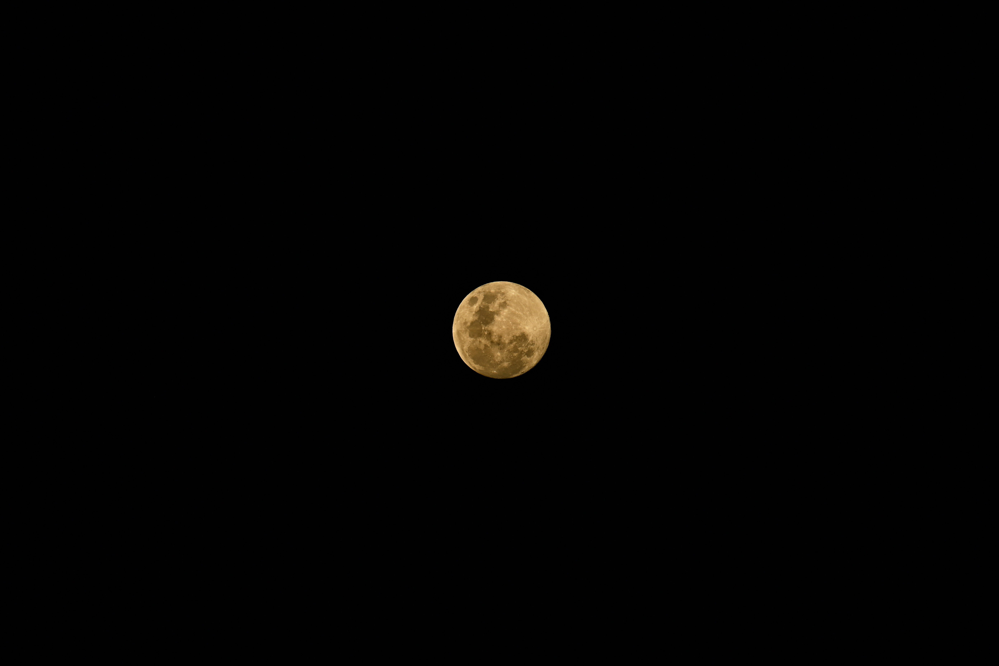
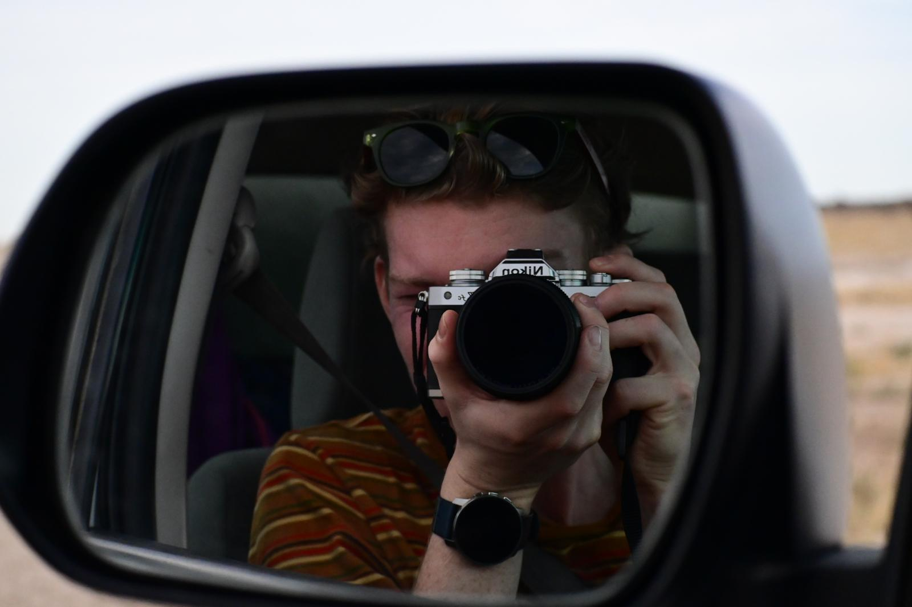

01
18.9 – 24.8° S · 15.0 – 16.4° E
Namibie
Parc national d'Etosha & les dunes de Sossusvlei / Deadvlei.





02
10.4° N · 83.5° O
Costa Rica
Faune du littoral caraïbe et des canaux de Tortuguero.


03
61 – 69° N · 5 – 18° E
Norvège
Fjords, toits de verdure et oiseaux côtiers.



À propos
Un carnet de route, en images.
Photographe voyageur de 25 ans, originaire de France. Passionné par la faune sauvage, j'aime capturer des moments authentiques lors de mes voyages, des plaines d'Etosha aux fjords norvégiens. Chaque photo raconte une rencontre avec un animal ou un paysage qui m'a marqué.
Contact